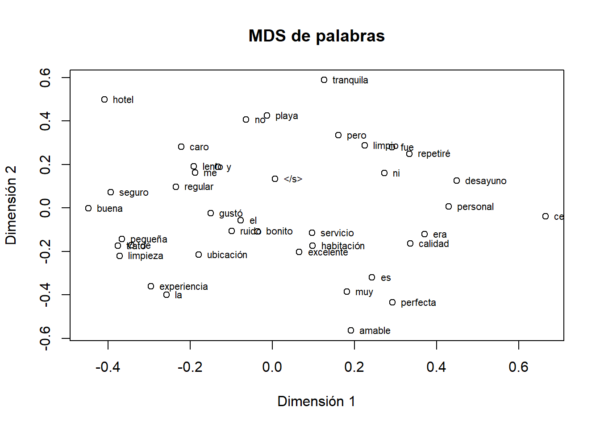
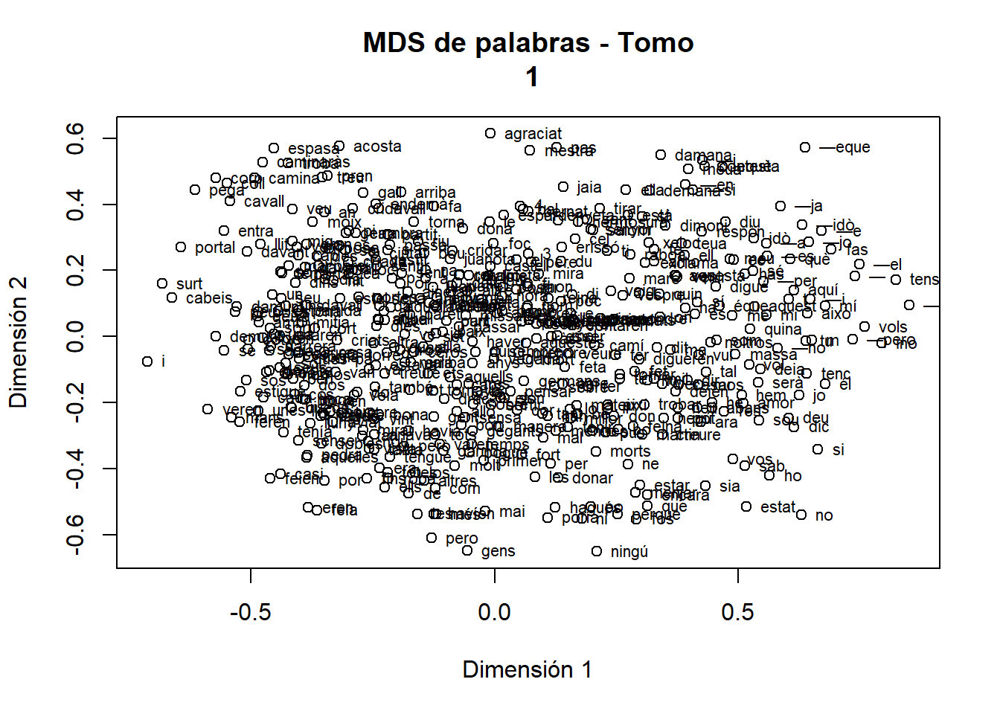

dir(pattern = "^tom.*\\.R$")[1] "tomo1.R" "tomo2.R" "tomo3.R" "tomo5.R" "tomo8.R"Hemos tenido que preprocesar los archivos PDF para convertirlos a texto utilizando la varios paquetes que se encuentran en los scripts
dir(pattern = "^tom.*\\.R$")[1] "tomo1.R" "tomo2.R" "tomo3.R" "tomo5.R" "tomo8.R"Dado que cada tomo presenta un formato diferente, ha sido necesario aplicar distintas funciones en cada caso con el objetivo de obtener un resultado lo más limpio posible. Los scripts de R empleados para el procesamiento de cada tomo se encuentran disponibles en el repositorio de GitHub. Cada uno de ellos tiene el mismo nombre que el fichero original, pero con extensión .tom?.R, y han sido ejecutados en RStudio.
Se han procesado los tomos I (1915), II (1913), III (1913), V (1924) y VIII (1924). Algunos tomos cuentan con dos o tres ediciones.Cuidado todos llevan un índice razonable, por ejemplo el tomo VIII lo lleva al final y esta compuesto por Siempre que ha sido posible, se ha trabajado con la edición más reciente; sin embargo, en ciertos casos ha sido necesario utilizar una edición más antigua, ya que la versión más moderna presentaba un formato más difícil de procesar. Se recomienda comprobar estos aspectos en el repositorio de GitHub, donde se incluyen todos los scripts de R utilizados.
En la carpeta pdf_aplecdel respositorio están disponibles los archivos PDF originales, mientras que en la carpeta txt_aplec se encuentran los archivos de texto resultantes del proceso de conversión. Estos archivos de texto son los que se han utilizado para el análisis posterior. Hemos cambiado el nombre de los archivos de texto por simplicidad.
dir("pdf_aplec")[1] "Aplec_Tom_I_1915.pdf" "Aplec_Tom_II_1913.pdf"
[3] "Aplec_Tom_III_1913.pdf" "Aplech_Tom_I_1896.pdf"
[5] "Aplech_Tom_II_1925.pdf" "Aplech_Tom_V_1924.pdf"
[7] "Aplech_Tom_VIII_1924.pdf"De los aplec con reediciones hemos tomado la más “conveniente”; dependiendo de dónde y cuando encontramos el índice que a veces está al final y a veces al principio del aplec.
Cada aplec en su versión más reciente ha sido procesado con un script, que han sido programados en paralelo; ya commentaremos el preprocesamiento en un otro momento.
dir(pattern = "^tom.*\\.R$")[1] "tomo1.R" "tomo2.R" "tomo3.R" "tomo5.R" "tomo8.R"Hasta la fecha, se han procesado los tomos I (1915), II (1913), III (1913), V (1924) y VIII (1924). Cabe señalar que algunos de estos tomos presentan dos o tres ediciones diferentes. Siempre que ha sido posible, se ha optado por trabajar con la edición más reciente; sin embargo, en ciertos casos ha sido necesario recurrir a ediciones anteriores, debido a que las versiones más modernas presentaban una estructura o calidad de digitalización que dificultaba su procesamiento automático.
Tal y como se evidencia en los scripts previamente descritos, el procesamiento de cada tomo ha requerido una etapa preliminar de conversión de los archivos PDF en imágenes individuales, generadas en formato PNG con una resolución de 400 DPI (punto por pulgada).
Esta transformación permite mejorar la calidad del reconocimiento posterior. En una segunda fase, dichas imágenes han sido sometidas a un proceso de reconocimiento óptico de caracteres (OCR) mediante el uso del paquete tesseract, con el objetivo de extraer, de forma aproximada, el contenido textual en formato digital estructurado.
En la carpeta raw_text se encuentran los resultados del procesamiento inicial de los textos, todavía pendientes de depuración y de la posterior formación de los corpus.
dir("raw_text") [1] "rondalles_ocr_tomo1.csv" "rondalles_ocr_tomo1.rds"
[3] "rondalles_ocr_tomo1.txt" "rondalles_ocr_tomo2.csv"
[5] "rondalles_ocr_tomo2.txt" "rondalles_ocr_tomo3.csv"
[7] "rondalles_ocr_tomo3.txt" "rondalles_ocr_tomo5.csv"
[9] "rondalles_ocr_tomo5.txt" "rondalles_ocr_tomo5_marcado.txt"
[11] "rondalles_ocr_tomo8.csv" "rondalles_ocr_tomo8.txt"
[13] "tabla_tomo1.csv" "tabla_tomo2.csv"
[15] "tabla_tomo3.csv" "tabla_tomo8.csv" Los archivos contenidos en esta carpeta son el resultado del proceso de conversión de los documentos originales en PDF a formatos de texto manejables para su análisis posterior.
En concreto, se distinguen dos tipos de archivos:
.csv contienen una tabla en la que cada fila corresponde a una página del documento original..txt contienen el texto completo de cada aplec, con un separador que permite identificar el inicio de cada página.Estos archivos constituyen la base textual inicial sobre la que se realizarán las tareas posteriores de limpieza, depuración, “normalización” y construcción de los corpus de trabajo.
A partir de los archivos de texto sin procesar, se han generado los corpus de trabajo que se emplearán en las tareas posteriores de análisis lingüístico y de procesamiento de lenguaje natural. Estos corpus se encuentran disponibles en la carpeta corpus del repositorio.
tom_1_1915 <- read_csv("raw_text/rondalles_ocr_tomo1.txt")Warning: One or more parsing issues, call `problems()` on your data frame for details,
e.g.:
dat <- vroom(...)
problems(dat)Rows: 8780 Columns: 1
── Column specification ────────────────────────────────────────────────────────
Delimiter: ","
chr (1): === Página 1 ===
ℹ Use `spec()` to retrieve the full column specification for this data.
ℹ Specify the column types or set `show_col_types = FALSE` to quiet this message.head(tom_1_1915)# A tibble: 6 × 1
`=== Página 1 ===`
<chr>
1 presented by
2 Mrs B. Huelin, l
3 on bebalfof the late
4 Mr D.S. Huelin
5 Mar- 2002
6 CARA Lo El paquete hunspell permite usar diccionarios ortográficos para detectar palabras que no aparecen en un diccionario determinado. En nuestro caso lo utilizaremos como una herramienta de ayuda para localizar posibles errores del OCR en los textos de las rondalles.
Es importante tener en cuenta que no lo usaremos para corregir automáticamente el texto, porque las rondalles mallorquinas contienen formas dialectales, nombres propios, grafías antiguas y variantes que pueden no aparecer en el diccionario catalán estándar.
# descomentar para instalar
#install.packages("hunspell")
library(hunspell)Descargamos el diccionario de catalan de el diccionario de palabars el de lños afijos y sufijos y el de silabeado
Para descargarlos directamente usa
dir.create("diccionarios/ca", recursive = TRUE, showWarnings = FALSE)
base_url <- "https://raw.githubusercontent.com/LibreOffice/dictionaries/master/ca/dictionaries"
download.file(
url = paste0(base_url, "/ca.dic"),
destfile = "diccionarios/ca/ca.dic",
mode = "wb"
)
download.file(
url = paste0(base_url, "/ca.aff"),
destfile = "diccionarios/ca/ca.aff",
mode = "wb"
)
# Opcional: fichero de silabeado
download.file(
url = paste0(base_url, "/hyph_ca.dic"),
destfile = "diccionarios/ca/hyph_ca.dic",
mode = "wb"
)Cargar diccionario de catalan
dic_ca <- dictionary(
lang = "diccionarios/ca.dic",
affix = "diccionarios/ca.aff"
)palabras_prueba <- c(
"casa",
"rondalla",
"mallorquina",
"aqeusta",
"paraula",
"pagesos"
)
hunspell_check(palabras_prueba, dict = dic_ca)[1] TRUE TRUE TRUE FALSE TRUE TRUEhunspellUna vez detectadas las palabras que el diccionario no reconoce, podemos pedir a hunspell que nos sugiera posibles correcciones.
La función que se utiliza para ello es:
hunspell_suggest()Esta función no corrige automáticamente el texto, sino que devuelve una lista de posibles palabras correctas. En el caso de las rondalles, esto es importante, porque muchas palabras marcadas como incorrectas pueden ser formas mallorquinas, nombres propios, grafías antiguas o variantes dialectales.
Por tanto, usaremos las sugerencias como ayuda para la revisión manual.
Primero probamos con una palabra concreta que parece ser un error del OCR:
hunspell_suggest("aqeusta", dict = dic_ca)[[1]]
[1] "aquesta" "eustaquià"El resultado puede ser algo parecido a:
[[1]]
[1] "aquesta"En este caso, hunspell sugiere que la palabra correcta podría ser aquesta.
También podemos probar con varias palabras:
palabras_sospechosas <- c(
"aqeusta",
"paraIua",
"mujer",
"rondaIla"
)
hunspell_suggest(
palabras_sospechosas,
dict = dic_ca
)[[1]]
[1] "aquesta" "eustaquià"
[[2]]
[1] "paraigua" "Paraguai" "paraguai"
[[3]]
[1] "muser" "murer" "muler"
[[4]]
[1] "rondalla" "ronda-la" "rondaire"El resultado será una lista de sugerencias para cada palabra.
Suponemos que ya tenemos una tabla llamada errores_frecuentes, creada a partir de las palabras no reconocidas por el diccionario.
Esta tabla debería tener, como mínimo, una columna llamada palabra:
errores_frecuentes <- tibble(
palabra = c("aqeusta", "paraIua", "rondaIla"),
frecuencia_total = c(3, 2, 5)
)Ahora añadimos las sugerencias de hunspell:
library(dplyr)
library(purrr)
library(tibble)
sugerencias_errores <- errores_frecuentes %>%
mutate(
sugerencias = map(
palabra,
hunspell_suggest,
dict = dic_ca
)
)
sugerencias_errores# A tibble: 3 × 3
palabra frecuencia_total sugerencias
<chr> <dbl> <list>
1 aqeusta 3 <list [1]>
2 paraIua 2 <list [1]>
3 rondaIla 5 <list [1]> La columna sugerencias contiene una lista con las posibles correcciones de cada palabra sospechosa.
Normalmente, la primera sugerencia suele ser la opción más probable. Podemos extraerla en una columna nueva:
sugerencias_errores <- sugerencias_errores %>%
mutate(
palabra_sugerida = map_chr(
sugerencias,
~ {
x <- .x[[1]]
if (length(x) > 0) x[1] else NA_character_
}
)
)
sugerencias_errores# A tibble: 3 × 4
palabra frecuencia_total sugerencias palabra_sugerida
<chr> <dbl> <list> <chr>
1 aqeusta 3 <list [1]> aquesta
2 paraIua 2 <list [1]> paraigua
3 rondaIla 5 <list [1]> rondalla Ahora tendremos una tabla con una columna llamada palabra_sugerida.
Esta columna no debe entenderse como una corrección definitiva, sino como una propuesta automática que debe revisarse manualmente.
Para revisar las sugerencias con más comodidad, podemos convertir todas las sugerencias en texto:
tabla_sugerencias <- sugerencias_errores %>%
mutate(
todas_las_sugerencias = map_chr(
sugerencias,
~ paste(.x, collapse = ", ")
)
) %>%
select(
palabra,
frecuencia_total,
palabra_sugerida,
todas_las_sugerencias
)
head(tabla_sugerencias, 50)# A tibble: 3 × 4
palabra frecuencia_total palabra_sugerida todas_las_sugerencias
<chr> <dbl> <chr> <chr>
1 aqeusta 3 aquesta "c(\"aquesta\", \"eustaquià\")"
2 paraIua 2 paraigua "c(\"paraigua\", \"Paraguai\", \"p…
3 rondaIla 5 rondalla "c(\"rondalla\", \"ronda-la\", \"r…La tabla resultante tendrá esta estructura:
| palabra | frecuencia_total | palabra_sugerida | todas_las_sugerencias |
|---|---|---|---|
| aqeusta | 3 | aquesta | aquesta |
| rondaIla | 5 | rondalla | rondalla, rondalles |
| paraIua | 2 | paraula | paraula |
En el caso de las rondalles, no conviene corregir automáticamente. Es mejor generar una tabla de revisión manual.
Añadimos dos columnas vacías:
tabla_revision_manual <- tabla_sugerencias %>%
mutate(
decision_manual = "",
comentario = ""
)
head(tabla_revision_manual, 50)# A tibble: 3 × 6
palabra frecuencia_total palabra_sugerida todas_las_sugerencias
<chr> <dbl> <chr> <chr>
1 aqeusta 3 aquesta "c(\"aquesta\", \"eustaquià\")"
2 paraIua 2 paraigua "c(\"paraigua\", \"Paraguai\", \"p…
3 rondaIla 5 rondalla "c(\"rondalla\", \"ronda-la\", \"r…
# ℹ 2 more variables: decision_manual <chr>, comentario <chr>En la columna decision_manual podemos indicar posteriormente qué hacer con cada palabra:
corregirmantenerdudanombre_propiomallorquinismografia_antiguaerror_ocrCreamos una carpeta de resultados, si todavía no existe:
dir.create("resultados", showWarnings = FALSE)Y exportamos la tabla en formato CSV:
readr::write_csv(
tabla_revision_manual,
"resultados/revision_manual_hunspell_rondalles.csv"
)Este archivo se puede abrir con Excel, LibreOffice Calc o cualquier editor de hojas de cálculo.
El procedimiento recomendado es el siguiente:
hunspell_suggest().Este método permite mejorar la calidad del texto OCR sin eliminar los rasgos lingüísticos originales de las rondalles mallorquinas.
No se debe usar este proceso para normalizar automáticamente el texto. El objetivo es detectar posibles errores de OCR y facilitar una revisión
Alfinal podemos generar una lista de palabras válidas que no aparecen en el diccionario estándar, pero que son legítimas en el contexto de las rondalles. Esta lista se puede usar posteriormente para mejorar el análisis lingüístico y para entrenar modelos de lenguaje específicos para este corpus.
word2vecEl paquete word2vec permite transformar palabras en vectores numéricos. Estos vectores intentan representar el significado de las palabras a partir de los contextos en los que aparecen.
En un corpus grande, palabras que aparecen en contextos parecidos suelen acabar teniendo vectores parecidos.
Para un ejemplo pequeño, es importante usar:
min_count = 1porque por defecto word2vec solo conserva palabras que aparecen al menos 5 veces.
# Descomentar para instalar
# install.packages("word2vec")
library(word2vec)
library(stringr)reseñas <- c(
"El hotel es muy bonito y limpio",
"El personal es amable y el servicio excelente",
"La habitación era pequeña pero tranquila",
"El desayuno es caro pero de buena calidad",
"Ubicación perfecta cerca de la playa",
"El servicio fue lento y el trato regular",
"Muy buena experiencia repetiré seguro",
"No me gustó la limpieza ni el ruido"
)
reseñas_limpias <- reseñas %>%
str_to_lower() %>%
str_replace_all("[[:punct:]]", " ") %>%
str_squish()
modelo <- word2vec(
x = reseñas_limpias,
type = "cbow",
dim = 20,
iter = 50,
min_count = 1
)
modelo$model
<pointer: 0x000002ac0a08b570>
$data
$data$file
[1] "C:\\Users\\ricuib\\AppData\\Local\\Temp\\RtmpEvIjTW\\textspace_670466fc54f3.txt"
$data$stopwords
character(0)
$data$n
[1] 56
$data$n_vocabulary
[1] 56
$vocabulary
[1] 40
$success
[1] TRUE
$error_log
[1] ""
$control
$control$min_count
[1] 1
$control$dim
[1] 20
$control$window
[1] 05
$control$iter
[1] 32
$control$lr
[1] 0.05
$control$skipgram
[1] FALSE
$control$hs
[1] FALSE
$control$negative
[1] 05
$control$sample
[1] 0.001
$control$expTableSize
[1] 1000
$control$expValueMax
[1] 06
$control$split_words
[1] " \n,.-!?:;/\"#$%&'()*+<=>@[]\\^_`{|}~\t\v\f\r"
$control$split_sents
[1] ".\n?!"
attr(,"class")
[1] "word2vec_trained"vocabulario <- summary(modelo, type = "vocabulary")
head(vocabulario)[1] "amable" "bonito" "calidad" "desayuno" "excelente" "fue" vector_hotel <- predict(
modelo,
newdata = "hotel",
type = "embedding"
)
vector_hotel [,1] [,2] [,3] [,4] [,5] [,6] [,7]
hotel 0.502044 -0.4427084 -1.023139 1.576781 -0.0742548 -1.151063 0.4534554
[,8] [,9] [,10] [,11] [,12] [,13] [,14]
hotel -1.15719 0.3511888 -0.4495344 1.365281 -1.485832 0.7809339 -1.453427
[,15] [,16] [,17] [,18] [,19] [,20]
hotel -1.294421 -0.4787113 0.6481451 -0.431304 1.682928 0.8253947predict(
modelo,
newdata = "hotel",
type = "nearest",
top_n = 5
)$hotel
term1 term2 similarity rank
1 hotel y 0.7556643 1
2 hotel buena 0.6622723 2
3 hotel tranquila 0.6597484 3
4 hotel lento 0.6516441 4
5 hotel seguro 0.6053380 5matriz_vectores <- as.matrix(modelo)
dim(matriz_vectores)[1] 40 20head(matriz_vectores) [,1] [,2] [,3] [,4] [,5] [,6]
amable -1.0195810 -1.1179246 0.7152554 -0.37065366 -0.42717093 0.04037174
bonito 1.1257370 -0.2652920 -0.6282934 -1.06893849 0.27475938 -1.67967987
calidad -0.1455811 1.1679618 0.6174894 0.90893769 -0.03430007 0.06719477
desayuno 1.0780256 -1.9592811 0.7319797 -0.90956801 -0.05956311 -0.83792710
excelente -0.6428269 -1.1458244 0.1858805 0.93992740 -0.93693733 -1.20436144
fue -1.3031809 -0.5208654 0.4859709 -0.01032278 0.70716631 -1.75255299
[,7] [,8] [,9] [,10] [,11] [,12]
amable 0.10905749 1.64026582 0.03097346 -0.324269 -1.1231389 0.3523573
bonito 0.06882848 1.30809343 1.04460049 1.087146 0.3190892 1.4351435
calidad -1.10825205 -0.59067136 -1.61257291 2.065677 -0.8623079 0.8031688
desayuno 0.46233600 -1.00160730 -1.59245574 1.826577 -0.2790672 -0.8233332
excelente -0.57063395 0.98719013 -1.34613228 1.668525 0.5748183 0.6586952
fue -0.01187952 0.01260977 -0.82900536 1.257781 -0.6329075 0.3929163
[,13] [,14] [,15] [,16] [,17] [,18]
amable 1.5106761 1.0754218 0.3968595 -1.7197940 1.6078639 1.8616025
bonito 1.6558142 -0.6464534 0.8648803 -1.2302833 0.9155945 -0.3697032
calidad 0.2031404 -0.2451085 1.2267952 -0.8010181 1.3275661 0.6762938
desayuno -0.3971889 -0.1089092 -0.9539192 -0.2016486 -0.1635058 1.3656762
excelente 1.5398673 -1.0928578 1.0562032 -0.5071757 1.2914823 1.2641548
fue 0.1410745 -1.8875965 -1.2100054 1.0811920 0.3666487 2.1387205
[,19] [,20]
amable -0.06303085 -0.27371952
bonito 1.14612830 -0.60656422
calidad -0.98586410 -1.45897293
desayuno -1.26189232 -0.69343448
excelente -0.40159097 -0.03722426
fue 0.33812168 -0.59933746Este ejemplo sirve solo para entender el funcionamiento. Con tan pocas frases, los resultados no tendrán mucho valor lingüístico.
Para obtener vectores útiles en las rondalles, necesitaremos entrenar el modelo con un corpus mucho más grande, por ejemplo con todos los textos de los aplecs.
Podemos ahora calcular la distancia entre los vectores de las palabras y proyectarlos en un espacio de dos dimensiones con t-SNE o UMAP o MDS para visualizar las relaciones entre las palabras.
La distancia que usaremos es la distancia coseno, que mide la similitud entre dos vectores. La distancia coseno se define como
\[ \text{distancia\_coseno}(A, B) = 1 - \frac{A \cdot B}{\|A\| \|B\|} \]
Se utiliza en word2vect porque esta distancia refleja mejor la similitud semántica entre palabras, independientemente de su frecuencia. Dos palabras que aparecen en contextos similares tendrán vectores con una dirección parecida, lo que se traduce en una distancia coseno baja.
Calculo la distancia coseno
#install.packages("proxy")
library(proxy)
Adjuntando el paquete: 'proxy'The following objects are masked from 'package:stats':
as.dist, distThe following object is masked from 'package:base':
as.matrixDistancias_coseno <- proxy::dist(matriz_vectores, method = "cosine") #install.packages("Rtsne") t-distributed Stochastic Neighbor Embedding.
library(Rtsne) # paquete de proyecciones más avanzado que cmdscale
library(ggplot2)
tsne_resultados <- Rtsne(Distancias_coseno, is_distance = TRUE)
ggplot(as.data.frame(tsne_resultados$Y), aes(x = V1, y = V2)) +
geom_point() +
geom_text(
aes(label = rownames(matriz_vectores)),
vjust = 1.5,
size = 3
) +
labs(title = "t-SNE de palabras", x = "Dimensión 1", y = "Dimensión 2")Podemos hacer COn el escaldo multidimensional clásico (MDS)
mds_resultados <- cmdscale(Distancias_coseno, k = 2)
plot(mds_resultados, main = "MDS de palabras", xlab = "Dimensión 1", ylab = "Dimensión 2")
text(mds_resultados, labels = rownames(matriz_vectores), cex = 0.7, pos = 4)
tomo1 <- read_csv("raw_text/rondalles_ocr_tomo1.csv")Rows: 300 Columns: 3
── Column specification ────────────────────────────────────────────────────────
Delimiter: ","
chr (1): texto
dbl (1): pagina
lgl (1): error
ℹ Use `spec()` to retrieve the full column specification for this data.
ℹ Specify the column types or set `show_col_types = FALSE` to quiet this message.Ahora partiremos el text por frases separadas or puntos.
#necesitamos la libraría
library(tidytext)
tomo1_frases <- tomo1 %>%
unnest_tokens(frase, texto, token = "sentences")Ahora word2vec
modelo_tomo1 <- word2vec(
x = tomo1_frases$frase,
type = "cbow",
dim = 20,
iter = 50,
min_count = 20
)Calculemos la distancia coseno entre los vectores de las palabras
matriz_vectores_tomo1 <- as.matrix(modelo_tomo1)
Distancias_coseno_tomo1 <- proxy::dist(matriz_vectores_tomo1,
method = "cosine")Y proyectamos con MDS
mds_resultados_tomo1 <- cmdscale(Distancias_coseno_tomo1, k = 2)
plot(mds_resultados_tomo1, main = "MDS de palabras - Tomo
1", xlab = "Dimensión 1", ylab = "Dimensión 2")
text(mds_resultados_tomo1, labels = rownames(matriz_vectores_tomo1), cex = 0.7, pos = 4)